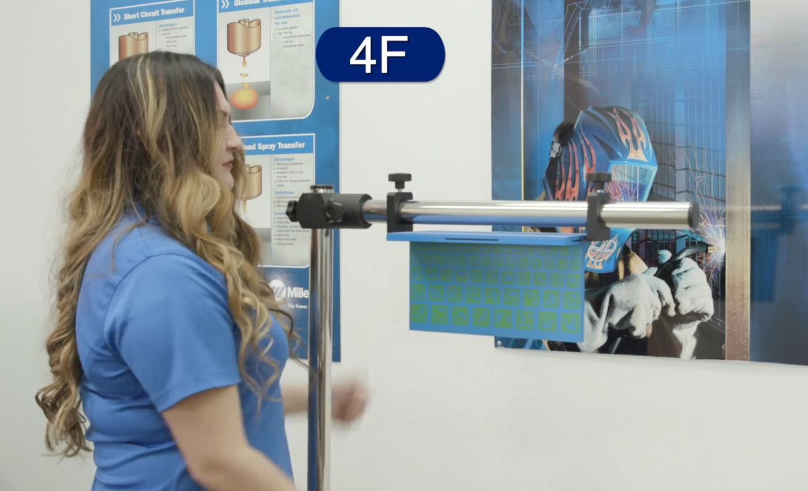
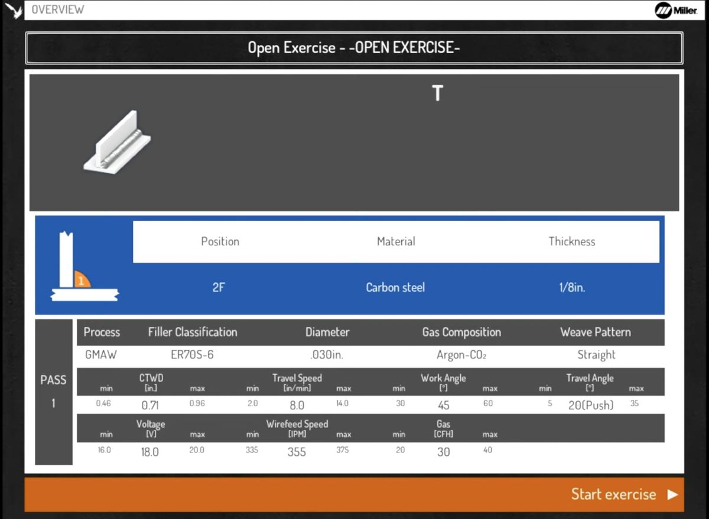
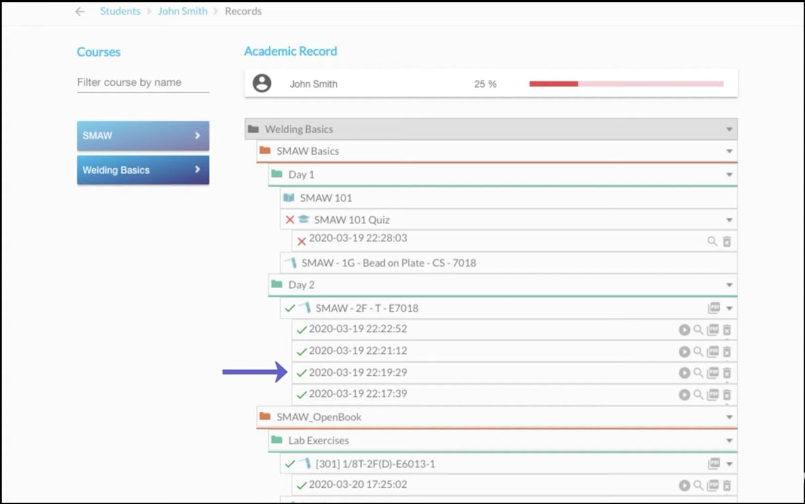

Unit objective
Given a sample AR simulator performance report, interpret the feedback data and provide constructive input to the welding student, identifying the indicator outside the acceptable range and recommending one specific technique modification.
What a simulator session records
A session gives you feedback at two different times: while the student welds, and after the weld is done. Each tells you something different.
Read the transcript
The player starts at 0:31 and plays to the end. The full transcript is below. Transcript cleaned from YouTube’s captions and checked against the audio.
0:02 To calibrate the lighting system on the helmet, you will be prompted to perform a calibration procedure prior to starting the exercise. A dashed white circle will appear in the middle of the screen. Face the helmet toward the workpiece. Aim the helmet so that the dashed white circle is aligned with the red solid circle. Hold the alignment throughout the process and a notification will be provided. The lighting calibration process can be manually initiated at any point by pressing the Settings button.
0:31 If prompted, tap the gun trigger or press the AR button to enable augmented reality mode. Place the gun at the simulated weld joint. Guides are displayed to assist with proper technique and positioning for parameters including contact-tip-to-work distance, gun angles, travel speed, and aim. If the guide is displayed in red, adjust your technique until it turns green.
0:56 During the weld simulation, the screen will darken to simulate a real welding environment. Use the up/down arrow buttons to adjust the simulated helmet shade to a value from 8 to 13. Once the simulation is complete and the simulated weld joint is filled, a notification will be displayed to prompt you to review the simulation analysis screen.
1:21 Each parameter will be scored and highlighted ones in red will indicate the welder failed to pass. To view the results in 3D view, press the AR button on the simulator or, to replay the weld, select the replay option at the top of the display screen. After the review is complete, select cancel to begin a new simulation. For more information on AugmentedArc, visit millerwelds.com.

During the weld
While the student welds, the guides in the helmet do the coaching. Each guide tracks one part of technique: contact-tip-to-work distance, gun angles, travel speed, and aim. A guide turns red when that part drifts and green when it’s back on track. The student also sees the machine settings across the top of the view.
Your job during the weld is different. Watch the student, not the screen. Pay attention to body position, and to how comfortable and relaxed they are as they work on their technique.
After the weld
When the joint is filled, the system shows the analysis screen:
- A technique score, compared with a target score
- A check on the equipment settings
- A score for each parameter, with its average
- A graph of each parameter along the length of the weld
- A replay of the weld, and a 3D view
In the Teacher Software, every attempt is saved with its date and time and marked pass or fail. That record lets you look across attempts, not just at one.
Putting the two together
Before you look at the report, check in with the student. How did it feel? What did they struggle with? What would they improve?
Treat what they tell you as something to check. If a student says “I think I sped up near the end,” look at the travel speed graph near the end of the weld. Sometimes the data confirms what the student felt. Sometimes it points to something they didn’t notice. Either way, you’ve started the conversation with the student, and the data backs it up.
Try it
During the weld, or after it?
When do you get each of these?
What each indicator measures
The report scores five parts of technique. Here’s what each one controls in the weld.
- Work angle
- Work angle affects the evenness of the weld bead. If it’s off, the weld comes out too flat or too steep. On a fillet weld, look for unequal legs or undercut on one side.
- Travel angle
- Travel angle affects the consistency of the weld bead. Holding the right travel angle makes sure the electrode melts into the base material properly.
- Contact-tip-to-work distance (CTWD)
- CTWD sets and keeps the right arc length for the welding process and electrode you’re using.
- Travel speed
- Travel speed controls heat input. Too fast, and the weld is narrow and may lack penetration. Too slow, and there’s too much heat and the weld runs too wide.
- Aim
- Aim keeps the movement of the electrode controlled, so it doesn’t point outside the area of the weldment you intend to weld.
The guides in the helmet group work angle and travel angle together as “gun angles.” The report splits them into two rows.
Voltage and wire feed speed also appear on the report. They’re machine settings, not technique, so the report checks them separately.
Try it
Find them on a report
This is the analysis screen in the Teacher Software. Select a numbered marker to see what that row measures and what this report shows.
![The AugmentedArc analysis screen in the Teacher Software. Technique Parameters score 96 against a target of 90, with a green check, and a check mark for Equipment Settings. Rows: work angle 47 degrees, graph from 30 to 60, score 98; travel angle minus 20 degrees, graph from minus 5 to minus 35, score 94; contact-tip-to-work distance 0.62 inches, graph from 0.50 to 1.00, score 94; travel speed 5.8 inches per minute, graph from 3.4 to 15.4, score 94, with red sections near the end of the weld; aim minus 0.02 inches, graph from minus 0.25 to 0.25, score 99. Voltage 18.5 volts and wire feed speed 220 inches per minute, both scored 100.](images/augmentedarc-teacher-analysis.jpg)
Select a marker to begin.
Markers: 1 Technique score · 2 Work angle · 3 Travel angle · 4 CTWD · 5 Travel speed · 6 Aim · 7 Voltage and wire feed speed. Still from a Miller Electric video.
1. Technique score
96 against a target of 90, with a green check. This attempt passed. The equipment settings get their own check underneath.
2. Work angle
Work angle affects the evenness of the weld bead. If it’s off, the weld comes out too flat or too steep. On this report: average 47°, scored 98. The graph runs from 30 to 60.
3. Travel angle
Travel angle affects the consistency of the weld bead. Holding the right travel angle makes sure the electrode melts into the base material properly. On this report: −20°, scored 94. The minus sign most likely marks push rather than drag; check your system’s manual.
4. Contact-tip-to-work distance (CTWD)
CTWD sets and keeps the right arc length for the welding process and electrode you’re using. On this report: average 0.62 in., scored 94.
5. Travel speed
Travel speed controls heat input. Too fast, and the weld is narrow and may lack penetration. Too slow, and there’s too much heat and the weld runs too wide. On this report: average 5.8 in/min, scored 94. Look at the right end of the graph: the line climbs, and part of it is flagged red.
6. Aim
Aim keeps the movement of the electrode controlled, so it doesn’t point outside the area of the weldment you intend to weld. On this report: average −0.02 in., scored 99.
7. Voltage and wire feed speed
These are machine settings, not technique. The report checks them against the exercise: 18.5 V and 220 IPM, both scored 100.
Acceptable ranges, and how they shift with joint and position
When a student changes welding positions, more than their body position changes. The welding parameters change too: travel angle, travel speed, and machine settings. That’s why “out of range” only means something for a specific joint and position.

Read the transcript
The player starts at 0:33; this lesson uses 0:33 to 1:06. The full transcript is below. Transcript cleaned from YouTube’s captions and checked against the audio.
0:02 Use the navigation buttons to select the username and press OK. Use the navigation buttons to enter the user password. Each button represents a specific numeral from 1 to 4. Press OK to log in. Select the course, module, and unit. Navigate to the desired exercise and select start. Review the exercise details and press OK.
0:33 Select an open exercise. Review the exercise settings related to difficulty, equipment settings, and real-time parameter guides. Make changes as desired and select next. Select the joint type, position, material thickness, process, filler classification, filler diameter, gas composition, and other parameters.
1:06 [Music]
1:14 Review the exercise details and press OK. For more information on AugmentedArc, visit millerwelds.com.
Where the ranges come from
Most welding instructors post acceptable ranges for each exercise: the best travel angle, the travel speed, and the recommended machine settings. An AR simulator does the same thing. Each exercise has a setup screen that lists a minimum, a target, and a maximum for every parameter.

| Parameter | Min | Target | Max |
|---|---|---|---|
| CTWD (in.) | 0.46 | 0.71 | 0.96 |
| Travel speed (in/min) | 2.0 | 8.0 | 14.0 |
| Work angle (°) | 30 | 45 | 60 |
| Travel angle (°) | 5 | 20 (push) | 35 |
| Voltage (V) | 16.0 | 18.0 | 20.0 |
| Wire feed speed (in/min) | 335 | 355 | 375 |
| Gas (CFH) | 20 | 30 | 40 |
Check the ranges before you read the report
Before you read a student’s report, look at the ranges for that exercise. A reading only means something next to the range for the joint and position the student welded.
Use the ranges on the setup screen. The numbers along the graphs on the report aren’t always the same, so don’t read the range from the graph.
Try it
Read it against the range
Example readings from one student’s 2F exercise. They’re made up for practice, not from a real session. Compare each one with the table above.
Reading a full report
When you sit down with a student’s report, work through it in order.
- Start with the overall score. It gives you an overview of how the student did on the weldment.
- Scan for red. Parameters highlighted in red are where attention needs to go first.
- Then the rest, with the student. Once the priority areas are covered, look at the other parameters, along with what the student was concerned about in their own technique.
![An AugmentedArc analysis screen. Technique Parameters score 96 against a target of 90, marked with a green check. Six rows show work angle averaging 38 degrees scoring 95, travel angle averaging 29 degrees scoring 87 and highlighted in red, contact-tip-to-work distance averaging 0.75 inches scoring 94, travel speed averaging 9.7 inches per minute scoring 98, aim averaging 0.07 inches scoring 97, with voltage and wire feed speed both scoring 100. Each row has a trace graph showing the value over the length of the weld, with red segments where the system flagged travel angle.](images/augmentedarc-analysis-screen.jpg)
Two things the overall score can hide
- A parameter that didn’t pass. On the report above, the overall score is 96 against a target of 90, and the attempt passed. Travel angle scored 87 and is highlighted red. That’s why step 2 matters.
- What happened along the weld. Travel angle averaged 29°, but the line reaches the top of its graph twice. An average can look fine while the line shows the trouble. Look at the line, not just the average.
Look across attempts
The Teacher Software keeps every attempt, with its date and a pass or fail mark. If the same parameter keeps coming up red, that’s the pattern to coach first. One red reading on one attempt may be a one-off.

Read the transcript
The player starts at 0:15; this lesson uses 0:15 to 1:42. The full transcript is below. Transcript cleaned from YouTube’s captions and checked against the audio.
0:00 Analysis module and virtual classroom. By the end of this video, you will be able to review results, replay video of an exercise, use the virtual classroom, generate reports.
0:15 After a student completes a task, the Teacher Software lets you review the results. In the students section on the navigation header, click on students. Double-click on the name of the student whose activity you wish to review. Click on the list icon from a course to review the student's records.
0:41 A list of the modules and its tasks will be shown, along with the attempts to pass the tasks. Each attempt is named with the date and time that it was executed, and it has an icon on the left indicating with a green check mark if the attempt was passed, or with a red X if it was not.
1:09 Find the attempt that you wish to review in more detail. Click on the play icon on its right to replay the simulation video and view the overall score. Additionally, we have detailed graphs and scores for each one of the technique parameters: work angle, travel angle, CTWD, travel speed, and aim.
1:42 Virtual classroom. The virtual classroom section of the Teacher Software shows the instructor what's happening in the AugmentedArc classroom in real time, including a score for each skill and a pass or fail score for each student. Click on virtual classroom on the navigation header. Select the course that is currently ongoing in the classroom.
2:13 A list of the students logged in with an AugmentedArc is displayed along with the status of their current activity: offline, connected, theory, quiz, simulation, and analysis. Now let's click on the student's name that we want to view detailed information about their activity. In this case, we are showing the technique and overall graphs and scores of the student while welding in real time.
2:57 Reports. The Teacher Software can generate different reports that can be accessed from the courses and students tabs. Some of them are course lists report, course global report, student course average report, histogram report. [On screen: examples of report screens, no narration.]
3:52 [Music] And many more.
4:12 For additional information on setting up your AugmentedArc welding training system, see your owner's manual or visit millerwelds.com.
Try it
Read the report, then the record
| Attempt | Result | Parameters flagged red |
|---|---|---|
| 1 | Fail | Travel angle |
| 2 | Fail | Travel angle |
| 3 | Pass | None |
| 4 | Fail | Travel angle, CTWD |
Turning a reading into a cue
Placeholder. Lesson text in development.